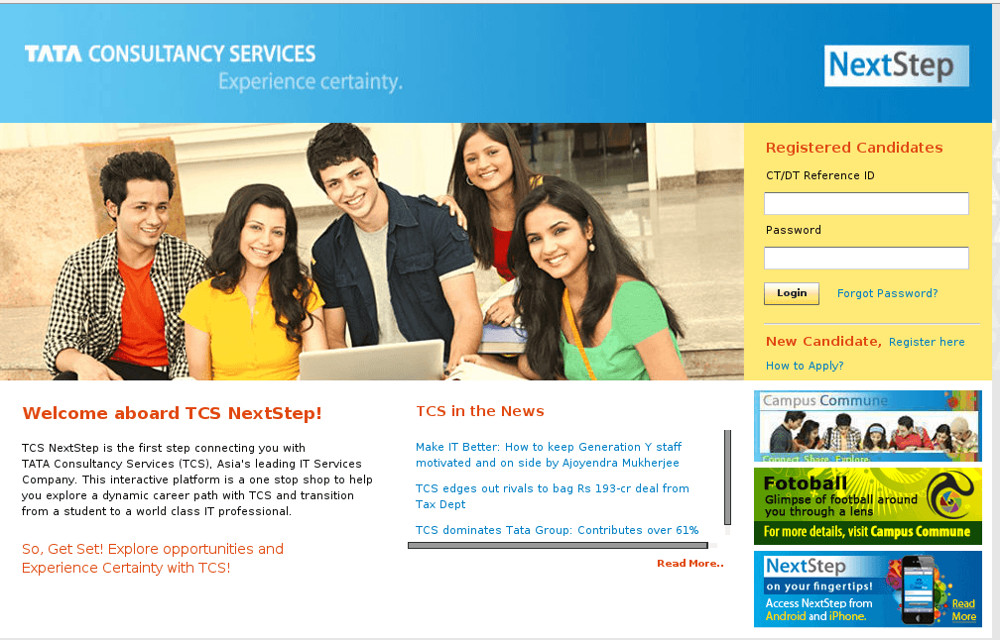
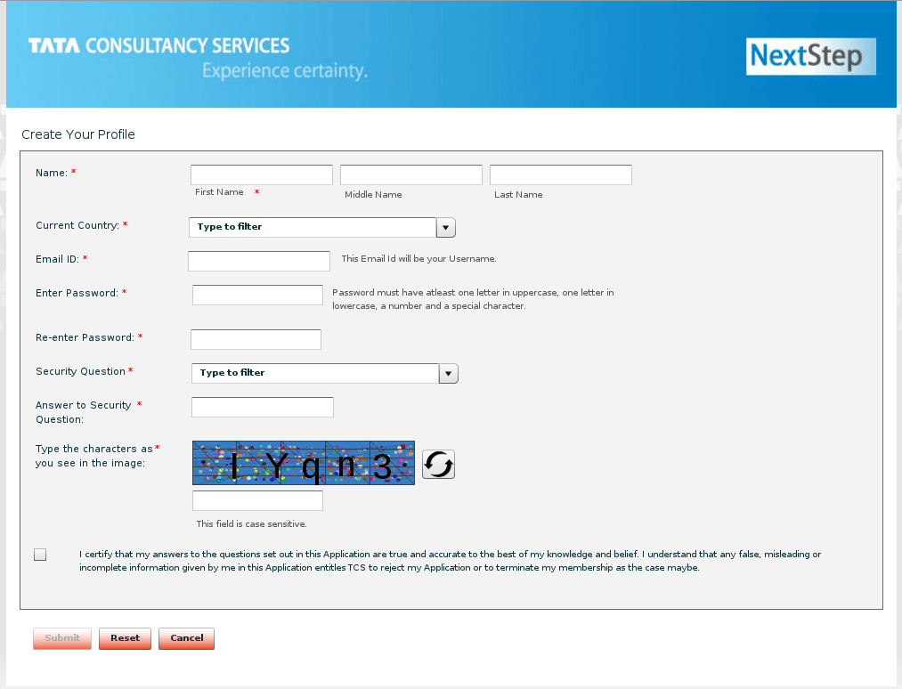
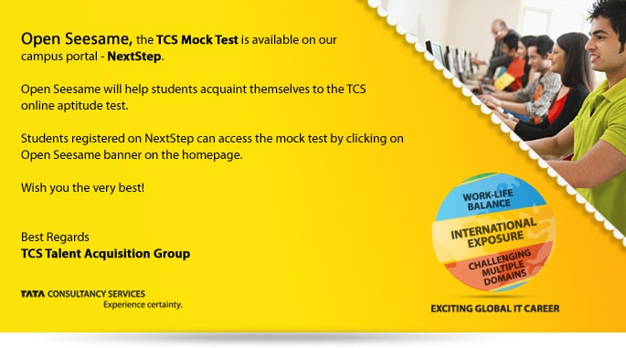
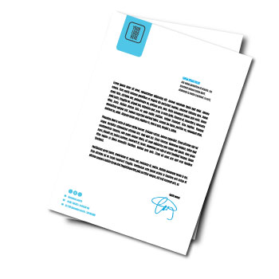

Registration Process


TCS keeps everything in Digital!!!
Yes, it's true. From starting to end you will be directly on indirectly interacting with TCS online portal, they named it NEXT STEP (before becoming permanent member of TCS) & ULTIMAX (after becoming permanent member of TCS).
Name itself is fast forward!
So, the very first step is to get registered on the Server.
Web-Site : www.nextstep.tcs.com
Go to above site and register as new candidate.
You will see two options, one is Campus Applicant & other Off-Campus Applicant. Wherever TCS conducts In-Campus drive, they ask the students to register as Campus Applicant.
If your college/institute is accredited with TCS go for Campus Applicant (there are some advantages if your college is accredited with TCS, ask your T n P for more details).
And for remaining, whose college/institute is not accredited with TCS and/or who has already completed the degree can register as Off-Campus Applicant. However both are almost same, almost!

Be careful!!!
Be careful, while filling up the first page of Registration form. The data you enter here will not be changed at any cost in future!!!
So before filling up the registration form, read the instructions besides it.
After successful Login, real Struggle starts here, i.e. in filling the Application form. It is around 4 pages long 😞.
But don't worry, here are detailed Registration Process videos for Off-Campus Applicant & Campus Applicant.
Note: While filling form, you can save your data and resume it later, wherever you left.
Wait Wait!!! Don't be so happy, if you successfully fill the Application form.
Till now, you are just registered on TCS server, this does not mean you are batched for upcoming drive!!!
If your form is submitted successfully without any error in 'Declaration', you may be batched for next off campus drive (For In Campus-drive, T n P will give further instructions). So before November (for December Off-Campus drive) & January (for February Off-Campus drive) complete your Application form.
Now you just have to wait for a mail from TCS stating about upcoming Off-Campus drive. After getting such mail, keep an eye on Next Step portal. Very soon you will be asked to confirm your test center. A new link will be added to left hand side menu bar, named 'Apply for Off-Campus drive'.
Here you're ready to go!!!
Within few days you will receive your hall ticket through mail and on Next Step portal too. So till then get ready for Aptitude test and e-mail writing...
Note:
If you are facing any problem you can directly ask to Tech support (too damn active Tech support), just mail your query to ilp.support@tcs.com

Aptitude Preparation:
I'll suggest you to practice logically. In my opinion, you will get more than sufficient time to solve all the questions in the test. Just don't rush for solving all the questions. You can have a look at model question set and software interface on Next Step portal itself.
Go to Next Step portal & login yourself. Now, just below left side menu bar you may see an Image written Open SeeSame, a TCS online Assessment Model question paper.
Or just go to www.nextstep.tcs.com/OpenSeesame (you must be logged in to your Next Step portal)Check out Download section for more practice questions.
Here is the complete list of TCS eligibility criteria:
- Minimum aggregate (aggregate of all subjects in all semesters) marks of 60% or above in the first attempt in each of your Class Xth, Class XIIth, Diploma (if applicable), Graduation and Post-Graduation examination which includes successful completion of your final year/semester without any pending arrears/back logs during the entire course duration. Please note that all subjects mentioned on the mark sheets should be taken into consideration while calculating the aggregate marks. For example, best of 5/6 subjects for calculating the aggregate is not acceptable as per the TCSL Eligibility Criteria. All subjects mentioned on the marksheet (including languages, optional subjects etc) should be taken into consideration for calculating obtained/total marks/CGPA. In cases where a candidate has completed both, XIIth and Equivalent Diploma, the cut off percentage of 60% and above is applicable to both the courses.
- First attempt implies that you should clear the final year/semester examination (Xth, XIIh, Diploma, Graduation and Post-Graduation as applicable) with minimum aggregate (aggregate of all subjects in all semesters) marks of 60% and above within the normal duration of the course itself. For example, if you have secured 58.9 % (aggregate of all subjects) in your Standard XIIth examination in the first attempt and you have taken an improvement exam in the next attempt securing 62 %, you do not fulfil the TCSL eligibility criteria as marks/CGPA obtained during the normal duration of the course only will be considered.Completion of all courses Class Xth onwards within the stipulated time as specified by your University/Institute and as per the TCSL Selection Guidelines without any extended education. For example, if you have a backlog in the final semester of BE, it is considered as extended education as the stipulated time to complete BE is 4 years.
- No pending backlog at the time of appearing for the TCS Selection process. All backlogs should have been cleared within the normal course duration and there should be no extended education.
- It is mandatory to declare the gaps/arrears/backlogs, if any, during your academic and/or work experience. Break in education should not be due to extended education. Any break in education/work experience should not exceed 24 months and is permissible only for valid reasons. Relevant document proof, as applicable, will be checked for gaps in education.
- It is mandatory to declare the gaps/arrears/backlogs, if any, during your academic and/or work experience. Break in education should not be due to extended education. Any break in education/work experience should not exceed 24 months and is permissible only for valid reasons. Relevant document proof, as applicable, will be checked for gaps in education.
- Only Full time courses will be considered (Part Time/Correspondence courses will not be considered).
- Candidates with work experience of more than 3 years are not eligible to participate in the TCS Selection process.
- You should be minimum 18 years of age to be eligible to apply for the TCSL Selection process.
- 
-
And here SELECTION (and rejection, of course) process starts...
So let's head on to our next process i.e.
Selection Process...